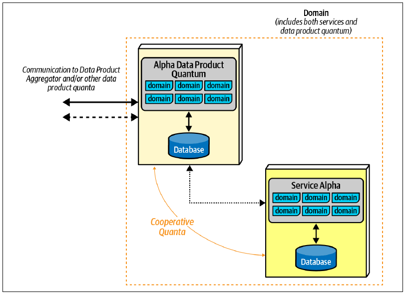
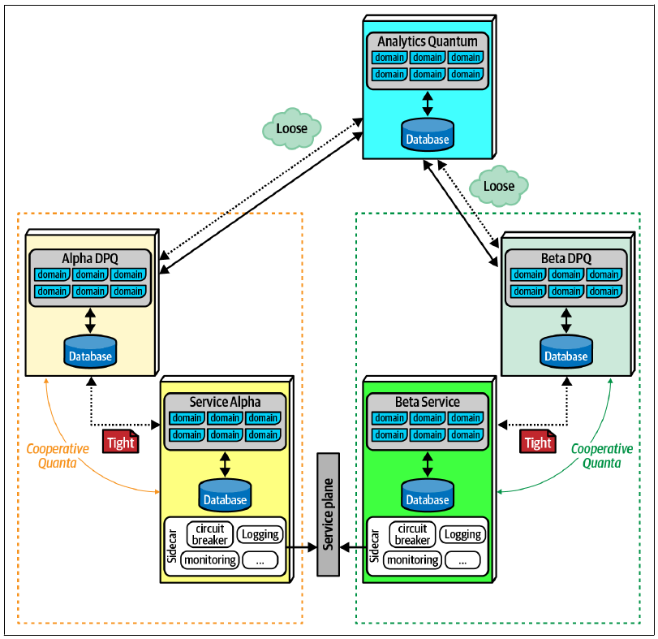
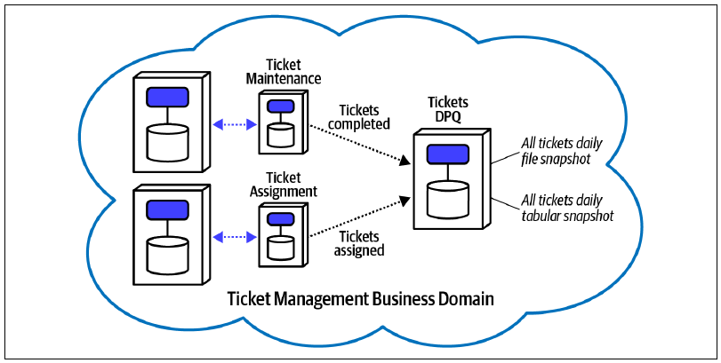
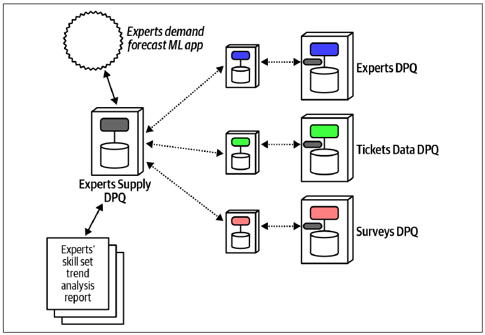

14 管理分析型数据
5 月 31 日，星期二，13:23
每周状态会议结束后，Logan 与数据架构师 Dana 站在大会议室外聊天。
“新架构中的分析数据要怎样处理？”Dana 问，“我们正在把数据库拆成小块，但为了报表与分析，又必须把所有数据重新拼起来。我们正在尝试的一项改进，是更好的预测规划，也就是利用更多数据科学与统计来制定更具战略性的决策。现在已经有一支团队专门考虑分析数据，我们需要系统的一部分来满足这种需求。要建立数据仓库吗？”
Logan 说：“我们研究过创建数据仓库。它虽然解决了整合问题，却给我们带来了一大堆麻烦。”
本书大部分内容都在研究如何分析微服务等现有架构风格中的权衡。不过，我们强调的技术同样可以帮助理解软件开发生态中新出现的能力；数据网格就是很好的例子。
在现代架构中，分析数据与运行数据的用途截然不同（见第 1 章“数据在架构中的重要性”）。本书大部分篇幅都在讨论与运行数据相关的艰难权衡。客户/服务器系统普及并发展到足以支持大型企业时，架构师与数据库管理员就开始寻找一种能够支持专门查询的方案。
14.1 以往的方式
运行数据与分析数据的分离绝非新问题；只要数据存在，两种根本不同的用途就一直存在。随着架构风格出现并演化，处理数据的方式也随之变化。
14.1.1 数据仓库
在软件开发的早期，例如大型机或早期个人计算机时代，应用是单体的，代码与数据都位于同一个物理系统。结合本书前面讨论的背景，不难理解跨不同物理系统协调事务为什么会变得困难。随着数据需求变得更有雄心，再加上办公室局域网出现，客户/服务器应用开始兴起：强大的数据库服务器运行在网络中，桌面应用运行在本地计算机上，通过网络访问数据。应用处理与数据处理的分离带来更好的事务管理、协调及许多其他好处，也让人们开始把历史数据用于分析等新用途。
架构师曾利用数据仓库模式，早期尝试提供可查询的分析数据。它试图解决的基本问题，正是运行数据与分析数据分离的核心：一方的格式与模式不一定适合另一方，甚至可能根本无法用于另一方。例如，许多分析问题需要聚合和计算；对于关系数据库而言，这些操作成本高昂，特别是数据库已经承受繁重事务负载时。
随着时间演化的数据仓库模式略有差异，主要取决于供应商产品与能力，但都拥有许多共同特征。基本假设是：运行数据存储在可通过网络直接访问的关系数据库中。数据仓库模式的主要特征如下。
从多个来源提取数据
运行数据位于各自独立的数据库，因此该模式会规定一种机制，把数据提取到另一个巨型数据存储，也就是模式中的“仓库”。为了生成报表而查询组织中所有不同数据库并不现实，所以数据只为分析目的被提取到仓库中。
转换成单一模式
运行模式往往与报表所需模式不匹配。例如，运行系统需要围绕事务组织模式与行为；分析系统则很少处理 OLTP 数据，通常面对大量数据，用于报表、聚合等。因此，多数数据仓库都采用星型模式实现维度建模，把运行系统中格式不同的数据转换成仓库模式。为了提高速度和简化处理，仓库设计者会反规范化数据，以改善性能并简化查询。
加载到仓库
运行数据位于各自独立的系统，所以仓库必须建立机制，定期提取、转换数据，再把它放入仓库。设计者可能使用关系数据库内置的复制等机制，也可能使用专用工具，把原始模式转换成仓库模式。当然，运行系统模式发生任何变化，都必须复制到转换后的模式中，使变更协调十分困难。
在仓库中完成分析
数据“生活”在仓库中，因此所有分析都在那里执行。从运行角度看，这一点很理想：数据仓库通常拥有极强的存储与计算能力，可以把繁重需求卸载到自己的生态中。
由数据分析师使用
数据仓库由数据分析师使用，他们的工作包括建立报表及其他商业智能资产。不过，建立有用报表需要领域理解，意味着领域专长必须同时存在于运行数据系统与分析系统；查询设计者需要在转换后的模式中使用同一批数据，才能建立有意义的报表与商业智能。
BI 报表与仪表板
数据仓库的输出包括商业智能报表、提供分析数据的仪表板，以及帮助公司做出更好决策的其他信息。
类 SQL 接口
为了方便 DBA 使用，多数数据仓库查询工具都会提供熟悉的能力，例如用类 SQL 语言编写查询。前面提到的数据转换步骤，其中一个原因就是为用户提供更简单的方式，查询复杂聚合及其他智能信息。
14.1.1.1 星型模式
星型模式在数据集市与数据仓库中十分流行。它把数据语义分成事实与维度：事实保存组织中可量化的数据；维度包含事实数据的描述性属性。因此，它也称为维度模型。
Sysops Squad 的事实数据例子包括小时费率、维修时间、与客户的距离，以及其他可具体度量的事物；维度则可能包括小组成员专长、成员姓名、门店位置及其他元数据。
最重要的是，星型模式有意进行反规范化，以简化查询和业务逻辑，也就是减少复杂连接；它还能加快查询与聚合，支持数据立方体等复杂分析，以及形成多维查询。多数星型模式最终都会变得极其复杂。
数据仓库模式很好地展示了软件架构中的技术分区：仓库设计者把数据转换成便于查询与分析的模式，却丢失了领域分区；需要时，只能在查询中重新创建。因此，该架构要求训练有素的专家理解如何构建查询。
不过，数据仓库模式的主要失败之处包括集成脆弱、领域知识极端分割、复杂，以及对预定用途功能有限。
集成脆弱
该模式要求在数据注入阶段进行转换，会给系统带来严重脆弱性。特定问题领域的数据库模式与该问题的语义高度耦合；领域变化要求模式变化，进而要求数据导入逻辑变化。
领域知识极端分割
建立复杂业务工作流需要领域知识；建立复杂报表与商业智能同样需要领域知识，并且要结合专门分析技术。两者的领域专长维恩图相互重叠，却只有部分重叠。架构师、开发人员、DBA 与数据科学家都必须围绕数据变化和演化进行协调，迫使生态中差异极大的部分紧密耦合。
复杂度
为了支持高级分析建立替代模式，会给系统增加复杂度；持续摄取和转换数据所需的机制也同样如此。数据仓库是组织正常运行系统之外的独立项目，必须作为完全独立的生态维护，却又与运行系统中嵌入的领域高度耦合。所有因素都会增加复杂度。
对预定用途功能有限
归根结底，多数数据仓库失败，是因为它们交付的业务价值与创建、维护仓库所需投入不相称。该模式在云环境出现之前就已普及，因此物理基础设施投资巨大，持续开发和维护成本也很高。数据消费者经常请求仓库无法提供的某类报表。最终，如此长期的投入却只有有限功能，注定多数项目失败。
同步造成瓶颈
数据仓库需要在各种运行系统间同步数据，会同时产生运行瓶颈和组织瓶颈：多个本来独立的数据流必须在一个位置汇聚。一个常见副作用是，尽管希望解耦，同步过程还是会影响运行系统。
运行契约与分析契约不同
记录系统有特定契约需求（第 13 章已讨论）。分析系统也有契约需求，而且往往与运行系统不同。数据仓库的流水线经常同时处理转换与摄取，在转换过程中引入契约脆弱性。
表 表格 14.1 展示了数据仓库模式的权衡。
14.1.1.2 权衡
| 优点 | 缺点 |
|---|---|
| 集中整合数据 | 领域知识极端分割 |
| 专用分析孤岛提供隔离 | 集成脆弱 |
| 复杂度 | |
| 对预定用途功能有限 |
5 月 31 日，星期二，13:33
“我们考虑过创建数据仓库，但意识到它更适合旧式单体架构，不适合现代分布式架构，”Logan 说，“而且，现在还要支持多得多的机器学习用例。”
“我最近常听到数据湖，怎么样？”Dana 问，“我在 Martin Fowler 的网站上读过一篇博客文章。它似乎解决了数据仓库的很多问题，也更适合机器学习用例。”
“哦，是的，那篇文章刚发布时我就读过，”Logan 说，“他的网站是一座优质信息宝库，那篇文章恰好在微服务概念走红不久后出现。事实上，我第一次读到微服务，就是 2014 年在同一个网站上。当时有个大问题：这类架构怎样管理报表？数据湖是早期答案之一，主要用于对抗数据仓库；后者肯定无法在微服务这样的架构中工作。”
“为什么？”Dana 问。
14.1.2 数据湖
面对数据仓库的复杂度、成本与失败，设计钟摆如许多反作用一样摆向另一个极端，形成数据湖模式。它有意成为数据仓库模式的反面。数据湖保留集中式模型和流水线，却把数据仓库的“转换再加载”模型反转为“加载再转换”。数据湖的理念不是投入大量工作进行可能永远用不到的转换，而是完全不预先转换，让业务用户以自然格式访问分析数据；用户通常必须根据自己的目的进行转换和整理。因此，工作负担从主动变成被动：不提前执行可能不需要的工作，只有出现需求时才转换。
许多架构师观察到，数据仓库的预建模式经常不适合用户要求的报表或查询类型，用户必须额外投入工作，充分理解仓库模式后才能构建方案。而且，许多机器学习模型在数据接近半原始格式时，比使用转换后的版本效果更好。对本来已经理解领域的专家而言，数据仓库的过程极其痛苦：数据被剥离领域边界与上下文，再转换进仓库，最后又必须依靠领域知识编写并不自然适合新模式的查询。
数据湖模式具有以下特征。
从多个来源提取数据
该模式仍会提取运行数据，但较少把它转换成另一种模式；相反，数据通常以“原始”或原生形式存储。某些转换仍可能发生。例如，上游系统可能把按列式快照组织的格式化文件转储到湖中。
加载到湖中
数据湖通常部署在云环境中，由运行系统定期转储数据组成。
由数据科学家使用
数据科学家和其他分析数据消费者发现湖中数据，再根据回答特定问题的需要执行聚合、组合及其他转换。
数据湖模式在许多方面优于数据仓库，但仍受到很多限制。
该模式仍以集中方式看待数据：数据从运行系统数据库中提取，再复制进近乎自由形式的湖。消费者必须自行发现如何把不同数据集连接起来，而这种工作通常也会在数据仓库中发生，尽管仓库已经投入了大量规划。背后的逻辑是：既然某些分析无论如何都要提前处理，那就把同样方式用于所有分析，省掉巨额前期投入。
数据湖避免了数据仓库中转换诱发的问题，却仍未解决部分问题，甚至制造了新问题。
难以发现正确资产
数据流入非结构化湖时，领域内数据关系的大量理解会蒸发。因此，领域专家仍然必须参与分析构建。
PII 与其他敏感数据
随着数据科学家能够把分散信息拼接起来，推导侵犯隐私的知识，人们对个人身份信息（PII）的担忧也随之上升。许多国家现在不仅限制私人信息，也限制可以组合起来识别个人的信息，避免它被用于广告定向或其他更恶劣的目的。把非结构化数据转储进湖，往往存在暴露信息的风险；这些信息可能被拼接起来侵犯隐私。不幸的是，与发现过程相同，领域专家才拥有避免意外暴露所需的知识，迫使他们重新分析湖中数据。
仍按技术分区，而不是领域分区
当前软件架构趋势正从按技术能力分区，转向按领域分区；数据仓库与数据湖却都聚焦技术分区。通常，架构师会把这两种方案设计成相互分离的摄取、转换、加载与服务分区，每个分区聚焦一项技术能力。
现代架构模式偏爱领域分区，并封装技术实现细节。例如，微服务架构试图按照领域而不是技术能力分隔服务，把包括数据在内的领域知识封装进服务边界。然而，数据仓库和数据湖都试图把数据作为单独实体分离，在过程中丢失或遮蔽重要领域视角，例如哪些数据是 PII。
最后一点至关重要。架构师越来越多地围绕领域而不是技术分区来设计架构，而前两种方式都把数据与上下文分离。架构师和数据科学家需要的是一种技术：既保留适当的宏观分区，又干净地分离分析数据与运行数据。表 表格 14.2 列出了数据湖模式的权衡。
14.1.2.1 权衡
| 优点 | 缺点 |
|---|---|
| 比数据仓库结构更宽松 | 有时难以理解关系 |
| 减少前期转换 | 需要临时转换 |
| 更适合分布式架构 |
流水线的脆弱性与病态耦合问题仍然存在。数据湖虽然减少转换，但转换与数据清洗仍很常见。
数据湖模式把数据完整性测试、数据质量及其他质量问题推给下游湖流水线，可能形成与数据仓库相同的运行瓶颈。
同时，因为技术分区与类似批处理的性质，方案可能遭遇数据陈旧。如果缺少谨慎协调，架构师要么忽略上游系统变化，产生陈旧数据；要么允许耦合的流水线中断。
5 月 31 日，星期二，14:43
“好吧，看来数据湖也不能用！”Dana 叫道，“现在怎么办？”
“幸运的是，最近一些研究找到了在微服务等分布式架构中解决分析数据问题的方法，”Logan 回答，“它遵循我们希望建立的领域边界，同时允许以数据科学家可用的方式投射分析数据；而且，它消除了律师担心的 PII 问题。”
“太好了！”Dana 说，“它怎样工作？”
14.2 数据网格
Zhamak Dehghani 与其他创新者观察分布式架构趋势，从微服务的领域导向解耦、服务网格和边车中提炼出数据网格模式的核心思想，再经调整应用到分析数据上。第 8 章介绍过，边车模式可以用一种不纠缠的方式组织正交耦合；运行数据与分析数据之间的分离，正是这种耦合的另一个绝佳例子，只是比简单的运行耦合更复杂。
14.2.1 数据网格的定义
数据网格是一种以去中心化方式共享、访问和管理分析数据的社会技术方法。它满足广泛的分析用例，例如报表、机器学习模型训练与洞察生成。与以往架构不同，它让数据架构和所有权与业务领域对齐，使数据能够点对点消费。
数据网格建立在四项原则之上。
领域拥有数据
数据由最熟悉它的领域拥有并共享：这些领域要么生成数据，要么是数据的一等消费者。该架构允许多个领域以点对点方式分布式共享和访问数据，不需要任何中介、集中式湖或仓库，也不需要专门的数据团队。
数据即产品
为防止数据形成孤岛，并鼓励领域共享数据，数据网格引入把数据作为产品提供的概念。它建立必要的组织角色与成功指标，确保领域以一种能够取悦整个组织数据消费者的方式提供数据。该原则引入一种新的架构量子，称为数据产品量子，负责维护并向消费者提供可发现、可理解、及时、安全且高质量的数据。本章会介绍数据产品量子的架构方面。
自助式数据平台
为了让领域团队能够建立并维护数据产品，数据网格引入一组新的自助式平台能力，重点改善数据产品开发者与消费者的体验。它包括以声明方式创建数据产品、通过搜索与浏览发现整个网格的数据产品，以及管理数据沿袭和知识图谱等其他智能图的涌现。
计算式联邦治理
该原则确保即使数据所有权去中心化，整个组织的数据合规、安全、隐私、质量及数据产品互操作性等治理要求，仍能在所有领域中一致满足。数据网格引入由各领域数据产品所有者组成的联邦决策模型。他们制定的政策会自动化，并以代码形式嵌入每个数据产品。该治理方式对架构的影响，是平台为每个数据产品量子提供嵌入式边车，在访问点——数据读取或写入处——存储并执行政策。
数据网格涵盖的范围很广，Zhamak Dehghani 的《Data Mesh》（O’Reilly）一书进行了完整介绍。本章聚焦其核心架构元素：数据产品量子。
14.2.2 数据产品量子
数据网格的核心原则叠加在微服务等现代分布式架构之上。与服务网格一样，团队在服务旁边建立与之耦合的数据产品量子（DPQ），如图 图 14.1 所示。

该例中，服务 Alpha 同时包含行为与事务型运行数据。领域还包括一个数据产品量子，同样包含代码和数据，并作为整个系统分析与报表部分的接口。DPQ 是一组运行上独立、却高度耦合的行为与数据。
现代架构中常见以下几类 DPQ。
与来源对齐的原生 DPQ
代表协作架构量子——通常是微服务——提供分析数据，并充当协作量子。
聚合 DPQ
以同步或异步方式聚合多个输入的数据。例如，对某些聚合而言，异步请求已经足够；另一些聚合则可能需要聚合器 DPQ 对与来源对齐的 DPQ 执行同步查询。
适用特定目的的 DPQ
为满足特定要求而定制的 DPQ，可能涵盖分析报表、商业智能、机器学习或其他支持能力。
同时参与分析与商业智能的每个领域都包含一个 DPQ，如图 图 14.2 所示。

这里，DPQ 表示由负责实现服务的领域团队拥有的组件。它与数据库中存储的信息重叠，也可能以异步方式与部分领域行为交互。为满足分析与商业智能的需要，数据产品量子很可能还同时包含行为与数据。
每个数据产品量子都作为服务本身的协作量子：
协作量子：一个运行上独立的量子，通过异步通信与最终一致性同协作者通信；它与协作者采用严格契约耦合，与分析量子通常采用较宽松的契约耦合。分析量子是负责报表、分析、商业智能等工作的服务。两个协作量子虽然在运行上独立，却代表数据的两个侧面：量子中的运行数据，以及数据产品量子中的分析数据。
系统的某个部分会承担分析与商业智能职责，形成自己的领域与量子。为了运行，该分析量子与它获取信息所需的各个数据产品量子之间存在静态量子耦合。根据请求类型，该服务可以对 DPQ 进行同步或异步调用。例如，某些 DPQ 会向分析 DPQ 提供 SQL 接口，允许同步查询；另一些需求则可能跨多个 DPQ 聚合信息。
14.2.3 数据网格、耦合与架构量子
分析报表通常是方案的必要功能，所以 DPQ 及其通信实现属于架构量子的静态耦合。例如，在微服务架构中，服务平面必须可用；如果设计使用消息传递，消息代理也必须可用。不过，与服务网格中的边车模式一样，DPQ 应与服务内部实现变更正交，并与数据平面维持单独契约。
从动态量子耦合角度看，数据边车应该始终实现同时采用最终一致性与异步通信的模式：要么是并行 Saga（aeo），要么是选集 Saga（aec）。换句话说，数据边车永远不应包含用于保持运行数据和分析数据同步的事务要求；那会破坏利用 DPQ 进行正交解耦的初衷。类似地，与数据平面的通信通常也应该异步，从而尽量减少对领域服务运行架构特性的影响。
14.2.4 何时使用数据网格
与架构中的所有事物一样，该模式也有权衡，见表 表格 14.3。
14.2.4.1 权衡
| 优点 | 缺点 |
|---|---|
| 非常适合微服务架构 | 需要与数据产品量子协调契约 |
| 遵循现代架构原则与工程实践 | 需要异步通信与最终一致性 |
| 允许分析数据与运行数据出色解耦 | |
| 精心设计的契约允许分析能力松耦合演化 |
数据网格最适合微服务等现代分布式架构；这类架构的事务边界控制良好，服务之间隔离充分。它允许领域团队决定其他量子所消费数据的数量、节奏、质量与透明度。
如果分析数据与运行数据必须始终保持同步，数据网格就更难使用；在分布式架构中，这本身就是严峻挑战。寻找支持最终一致性的方法——可能结合非常严格的契约——可以使用许多不会强加其他困难的模式。
数据网格很好地展示了软件开发生态中持续发生的渐进式演化：新能力创造新视角，继而帮助解决过去长期存在的麻烦，例如把领域与运行、分析数据人为分离。
14.3 Sysops Squad 案例：数据网格
6 月 10 日，星期五，09:55
Logan、Dana 与 Addison 在大会议室碰面。这里经常留着前一场会议的零食；时间这么早，留下来的也可能是早餐。
“我刚结束与数据科学家的会议。他们正在想办法解决一个长期问题：我们需要依靠数据来规划专家供给，根据不同时间、不同地理位置的技能需求安排人才。这项能力会帮助招聘、培训及其他供给相关职能。”Logan 说。
“我没怎么参与数据网格实现，现在进展到什么程度？”Addison 问。
“我们实现的每项新服务都包含一个 DPQ。领域团队负责运行和维护自己服务的 DPQ 协作量子。我们才刚刚起步；随着需求出现，会逐步建立能力。我这里有一张工单管理领域的图，见图 图 14.3。”

Logan 说：“Tickets DPQ 是自己的架构量子，并作为聚合点，提供其他系统关心的几种不同工单视图。”
“每个团队需要自己建立多少？平台已经提供多少？”Addison 问。
“我可以回答，”Dana 说，“数据网格平台团队正在为数据用户和数据产品开发者提供一组自助式能力。任何希望建立新分析用例的团队，都可以在现有架构量子中搜索并找到适合的数据产品，直接连接并开始使用。平台也支持希望创建新数据产品的领域。它会持续监视网格中是否有数据产品宕机或违反治理政策，并通知领域团队采取行动。”
Logan 说：“领域数据产品所有者与安全、法律、风险和合规领域专家，以及平台产品所有者组成了全局联邦治理小组，决定 DPQ 中必须标准化的方面，例如数据共享契约、数据异步传输方式、访问控制等。平台团队会逐步为 DPQ 边车增加新的政策执行能力，并在整个网格中统一升级边车。”
“哇，进展比我想象得更远，”Dana 说，“专家供给问题需要哪些数据？”
Logan 回答：“我们和数据科学家一起确定了需要聚合的信息。看起来相关数据已经齐备：Tickets DPQ 提供所有已提交和已解决工单的长期视图；用户维护 DPQ 为所有专家 Profile 提供每日快照；调查 DPQ 则提供全部客户调查结果日志。”
“太棒了，”Addison 说，“也许应该创建一个新 DPQ，名称可以是‘专家供给 DPQ’，异步接收这三个 DPQ 的输入？它的第一个产品可以称为‘供给建议’，使用从调查、工单和维护领域 DPQ 聚合的数据训练机器学习模型。随着工单、调查和专家 Profile 的新数据到达，专家供给 DPQ 每天提供建议数据。总体设计见图 图 14.4。”

“好，这看起来完全合理，”Dana 说，“服务已经完成，只要确认每个来源 DPQ 都存在对应端点，再实现新的专家供给 DPQ。”
“没错，”Logan 说，“不过有件事必须担心：趋势分析依赖可靠数据。如果某个供给来源系统在一段时间内返回的信息不完整，会发生什么？那不会扭曲趋势分析吗？”
“确实如此。对一个时间段而言，没有数据比数据不完整更好；不完整数据会让流量看起来低于实际情况，”Dana 说，“只要这种情况不频繁，可以直接排除空白日期。”
“好，Addison，你知道这意味着什么吧？”Logan 说。
“当然知道：写一份 ADR，规定要么提供完整信息，要么完全不提供；再建立适应度函数，确保取得的是完整数据。”
背景
专家供给 DPQ 对指定时间段进行趋势分析。特定日期的数据不完整会扭曲趋势结果，应该避免。
决策
确保专家供给 DPQ 的每个数据来源，要么提供每日趋势的完整快照，要么当天完全不提供数据，让数据科学家能够排除该日。
来源数据流与专家供给 DPQ 之间应该采用松耦合契约，避免脆弱性。
后果
如果太多日期因可用性或其他问题而被排除，趋势准确性会受到负面影响。
适应度函数
- 完整每日快照：消息到达时检查时间戳。按照典型消息量，任何超过一分钟的间隔都表示处理存在缺口，把当天标记为排除。
- Ticket DPQ 与专家供给 DPQ 的消费者驱动契约适应度函数：确保工单领域的内部演化不会破坏专家供给 DPQ。